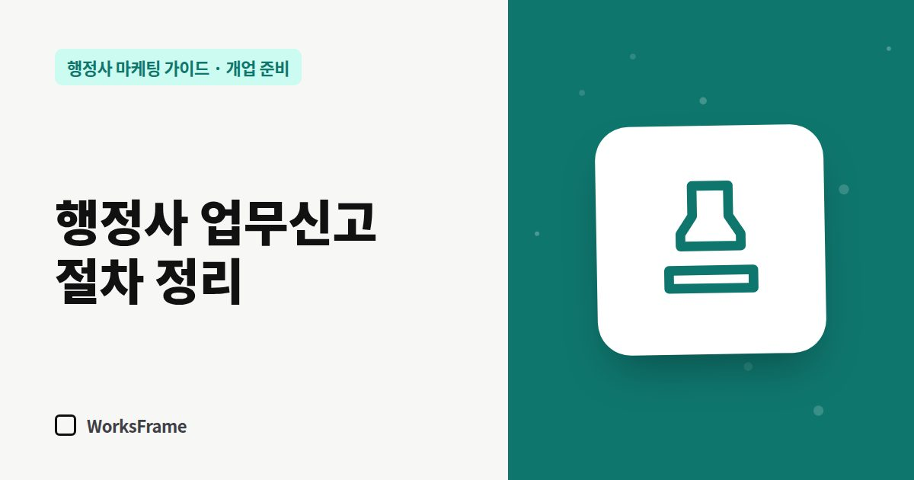

개업 준비
행정사 업무신고 절차, 순서대로 정리 — 실무교육부터 신고 서류까지
한 줄 답
실무교육을 마치고 대한행정사회에 가입한 뒤, 사무소를 열고 관할 시·군·구청에 업무신고서·자격증 사본·실무교육 수료증 사본·행정사회 회원증을 내면 됩니다. 사업자등록은 세무서에서 따로 합니다.

행정사 자격증은 “업무를 할 수 있는 자격”이고, 실제로 사무소를 열어 일을 받으려면 업무신고까지 마쳐야 합니다. 대한행정사회가 안내하는 순서를 기준으로, 단계마다 무엇을 준비하면 되는지 정리했습니다.
2026년 9월 기준입니다. 서식과 요건은 바뀔 수 있으니 신고 전에 관할 시·군·구청과 대한행정사회에 다시 확인하세요.
전체 흐름
- 행정사 자격증 취득
- 실무교육 이수 — 시·도지사가 실시하는 실무교육
- 대한행정사회 가입
- 사무소 개설
- 업무신고 — 관할 시·군·구청
단계별로 준비할 것
실무교육
업무신고 서류에 실무교육 수료증 사본이 들어갑니다. 교육 일정은 지역마다 다르니 자격증을 받은 뒤 바로 일정부터 확인하세요. 교육 기간에 사무실 후보를 보고, 주력 업무를 정해 두면 시간을 아낄 수 있습니다.
대한행정사회 가입
업무신고 서류에 행정사회 회원증이 필요합니다. 가입 절차와 비용은 행정사회 안내를 따르세요.
사무소 개설
사무소 주소는 업무신고서, 사업자등록, 네이버 플레이스, 명함에 모두 들어갑니다. 한 번 정하면 바꾸기 번거로우니 위치를 신중히 고르세요. 위치 고르는 기준은 사무소 위치 고르는 법에 정리했습니다.
업무신고
관할 시·군·구청에 신고합니다. 대한행정사회 안내에 나온 제출 서류는 다음과 같습니다.
- 업무신고서
- 행정사 자격증 사본
- 실무교육 수료증 사본
- 행정사회 회원증
놓치기 쉬운 것
| 항목 | 확인할 점 |
|---|---|
| 사업자등록 | 업무신고와 별개입니다. 세무서 절차를 따로 챙기세요. |
| 사무소명 | 업무신고서·사업자등록·간판·온라인 등록에서 같은 표기로 |
| 주소 | 호수까지 정확히. 온라인 등록 심사에서 서류와 비교합니다. |
| 대표 전화 | 휴대폰을 쓸지 사무실 번호를 쓸지 미리 정하기 |
신고 후 바로 할 일
업무신고가 끝났다면 이제 고객이 찾을 수 있게 만들 차례입니다. 네이버 플레이스, 카카오톡 채널, 홈페이지, 검색 등록 순서는 개업 준비 체크리스트의 2단계를 따라가면 됩니다.
자주 묻는 질문
실무교육은 언제 받아야 하나요?
업무신고 전에 이수해야 합니다. 신고 서류에 수료증 사본이 들어가기 때문입니다. 일정은 시·도마다 다르니 미리 확인하세요.
업무신고와 사업자등록은 같은 건가요?
다릅니다. 업무신고는 행정사법에 따라 관할 시·군·구청에 하는 신고이고, 사업자등록은 세무서에 하는 절차입니다.